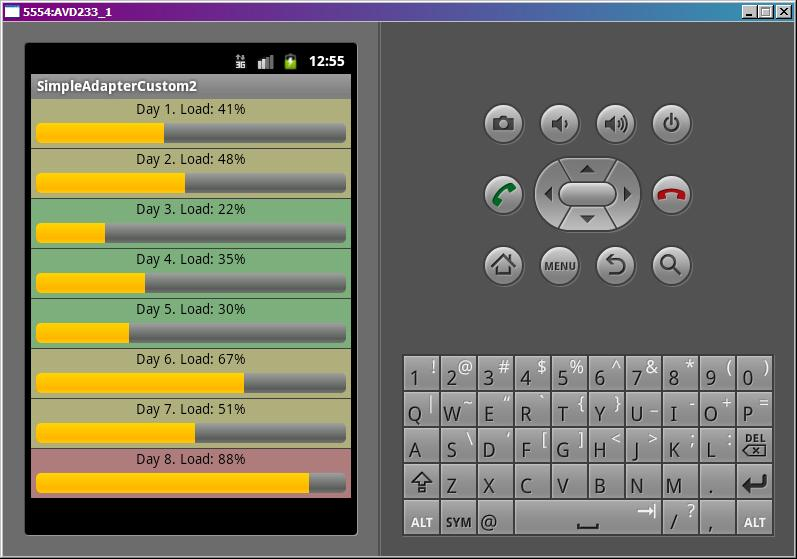

В этом уроке:
- используем свой SimpleAdapter.ViewBinder
Адаптер SimpleAdapter при своей работе сопоставляет View-компоненты и значения из Map-объектов. Как он это делает по умолчанию и с каким View-компонентами умеет работать, мы рассмотрели в предыдущих уроках. Но если нам не хватает этих возможностей, мы всегда можем создать свой обработчик и присвоить его адаптеру.
Для этого используется метод setViewBinder (SimpleAdapter.ViewBinder viewBinder), который на вход требует объект SimpleAdapter.ViewBinder. Мы создаем свой вариант этого биндера и реализуем в нем метод setViewValue(View view, Object data, String textRepresentation), в котором прописываем всю логику сопоставления данных и компонентов (биндинга). Метод возвращает значение boolean.
Алгоритм работы адаптера таков: он сначала проверяет, давали ли ему сторонний биндер.
Если находит, то выполняет его метод setViewValue. Если метод возвращает true, то адаптер считает, что обработка успешно завершена, если же false – то он выполняет биндинг в своем стандартном алгоритме, который мы рассмотрели на предыдущих уроках.
Если адаптер не находит сторонний биндер, он также выполняет стандартный биндинг.
Т.е. наша задача – заполнить метод SimpleAdapter.ViewBinder.setViewValue. И здесь уже нет ограничений на TextView или ImageView, может быть обработан и заполнен любой компонент. Создадим пример, в котором будем заполнять значение ProgressBar и менять цвет LinearLayout.
Это будет приложение-мониторинг, которое отображает уровень загрузки мощностей какой-то системы в разрезе дней. ProgressBar будет показывать уровень загрузки, а весь пункт списка будет подкрашиваться цветом в зависимости от уровня загрузки.
Создадим проект:
Project name: P0501_SimpleAdapterCustom2
Build Target: Android 4.0
Application name: SimpleAdapterCustom2
Package name: ru.startandroid.develop.p0501simpleadaptercustom2
Create Activity: MainActivity
Рисуем экран main.xml:
<?xml version="1.0" encoding="utf-8"?>
<LinearLayout
xmlns:android="http://schemas.android.com/apk/res/android"
android:layout_width="fill_parent"
android:layout_height="fill_parent"
android:orientation="vertical">
<ListView
android:id="@+id/lvSimple"
android:layout_width="match_parent"
android:layout_height="wrap_content">
</ListView>
</LinearLayout> Только список.
Нам понадобится создать файл res/values/colors.xml, где мы перечислим требуемые нам цвета:
<?xml version="1.0" encoding="utf-8"?>
<resources>
<color name="Bckgr">#9C9C9C</color>
<color name="Red">#33FF0000</color>
<color name="Orange">#33FFFF00</color>
<color name="Green">#3300FF00</color>
<color name="Black">#000000</color>
</resources>Теперь создаем layout для пунктов списка res/layout/item.xml:
<?xml version="1.0" encoding="utf-8"?>
<LinearLayout
xmlns:android="http://schemas.android.com/apk/res/android"
android:layout_width="match_parent"
android:layout_height="match_parent"
android:orientation="vertical"
android:background="@color/Bckgr">
<LinearLayout
android:id="@+id/llLoad"
android:layout_width="match_parent"
android:layout_height="wrap_content"
android:orientation="vertical">
<TextView
android:id="@+id/tvLoad"
android:layout_width="wrap_content"
android:layout_height="wrap_content"
android:text="TextView"
android:layout_gravity="center_horizontal"
android:textColor="@color/Black">
</TextView>
<ProgressBar
android:id="@+id/pbLoad"
style="?android:attr/progressBarStyleHorizontal"
android:layout_width="match_parent"
android:layout_height="wrap_content"
android:layout_margin="5dp"
android:max="100">
</ProgressBar>
</LinearLayout>
</LinearLayout>llLoad – LinearLayout который занимает весь пункт списка, и который мы будем разукрашивать,
tvLoad – текст-инфа,
pbLoad – индикатор загрузки.
Код MainActivity.java:
package ru.startandroid.develop.p0501simpleadaptercustom2;
import java.util.ArrayList;
import java.util.HashMap;
import java.util.Map;
import android.app.Activity;
import android.os.Bundle;
import android.view.View;
import android.widget.ListView;
import android.widget.ProgressBar;
import android.widget.SimpleAdapter;
public class MainActivity extends Activity {
// имена атрибутов для Map
final String ATTRIBUTE_NAME_TEXT = "text";
final String ATTRIBUTE_NAME_PB = "pb";
final String ATTRIBUTE_NAME_LL = "ll";
ListView lvSimple;
/** Called when the activity is first created. */
public void onCreate(Bundle savedInstanceState) {
super.onCreate(savedInstanceState);
setContentView(R.layout.main);
// массив данных
int load[] = { 41, 48, 22, 35, 30, 67, 51, 88 };
// упаковываем данные в понятную для адаптера структуру
ArrayList<Map<String, Object>> data = new ArrayList<Map<String, Object>>(
load.length);
Map<String, Object> m;
for (int i = 0; i < load.length; i++) {
m = new HashMap<String, Object>();
m.put(ATTRIBUTE_NAME_TEXT, "Day " + (i+1) + ". Load: " + load[i] + "%");
m.put(ATTRIBUTE_NAME_PB, load[i]);
m.put(ATTRIBUTE_NAME_LL, load[i]);
data.add(m);
}
// массив имен атрибутов, из которых будут читаться данные
String[] from = { ATTRIBUTE_NAME_TEXT, ATTRIBUTE_NAME_PB,
ATTRIBUTE_NAME_LL };
// массив ID View-компонентов, в которые будут вставлять данные
int[] to = { R.id.tvLoad, R.id.pbLoad, R.id.llLoad };
// создаем адаптер
SimpleAdapter sAdapter = new SimpleAdapter(this, data, R.layout.item,
from, to);
// Указываем адаптеру свой биндер
sAdapter.setViewBinder(new MyViewBinder());
// определяем список и присваиваем ему адаптер
lvSimple = (ListView) findViewById(R.id.lvSimple);
lvSimple.setAdapter(sAdapter);
}
class MyViewBinder implements SimpleAdapter.ViewBinder {
int red = getResources().getColor(R.color.Red);
int orange = getResources().getColor(R.color.Orange);
int green = getResources().getColor(R.color.Green);
@Override
public boolean setViewValue(View view, Object data,
String textRepresentation) {
int i = 0;
switch (view.getId()) {
// LinearLayout
case R.id.llLoad:
i = ((Integer) data).intValue();
if (i < 40) view.setBackgroundColor(green); else
if (i < 70) view.setBackgroundColor(orange); else
view.setBackgroundColor(red);
return true;
// ProgressBar
case R.id.pbLoad:
i = ((Integer) data).intValue();
((ProgressBar)view).setProgress(i);
return true;
}
return false;
}
}
}Смотрим код. Заполняем массив данных загрузки по 100-бальной шкале. Формируем данные для адаптера: в TextView будем передавать краткую информацию (String), а в ProgressBar и LinearLayout – значение загрузки (int). Заполняем массивы сопоставления, создаем адаптер, говорим ему, чтобы использовал наш биндер, и настраиваем список.
Вложенный класс MyViewBinder – это наша реализация биндера. Мы должны реализовать метод setViewValue, который будет использоваться адаптером для сопоставления данных из Map и View-компонентов. На вход ему идут:
view - View-компонент
data - данные для него
textRepresentation - текстовое представление данных (data.toString() или пустой String, но никогда не null)
Итак, смотрим реализацию. Сначала проверяется какой компонент нам дали на обработку.
В случае llLoad мы ожидаем данные типа int, поэтому выполняем приведение Object к Integer и получаем данные по загрузке из массива. А далее смотрим уровень этой загрузки. Если меньше 40, то будем считать, что все ок, цвет фона зеленый. От 40 до 70 – внимание, цвет желтый. Выше 70 – высокая нагрузка, красный цвет. Возвращаем true. Это важно! Тем самым мы говорим адаптеру, что мы успешно выполнили биндинг для данного компонента и выполнять для него стандартную обработку не надо.
В случае pbLoad мы также ожидаем int и выполняем приведение. А затем просто вызываем метод setProgress и передаем ему значение. В конце возвращаем true – мы сами успешно обработали компонент, стандартная обработка не нужна.
Для всех других View-компонентов метод setViewValue будет возвращать false. Это значит, компоненты пойдут на стандартную обработку адаптером. В нашем случае по этому пути отправится tvLoad и адаптер сам передаст ему текст из Map, наше вмешательство не нужно.
Все сохраняем и запускаем.

Получаем вот такую картинку. LinearLayout заполнился цветом, ProgressBar отобразил уровень загрузки, TextView показал информацию о дне и загрузке.